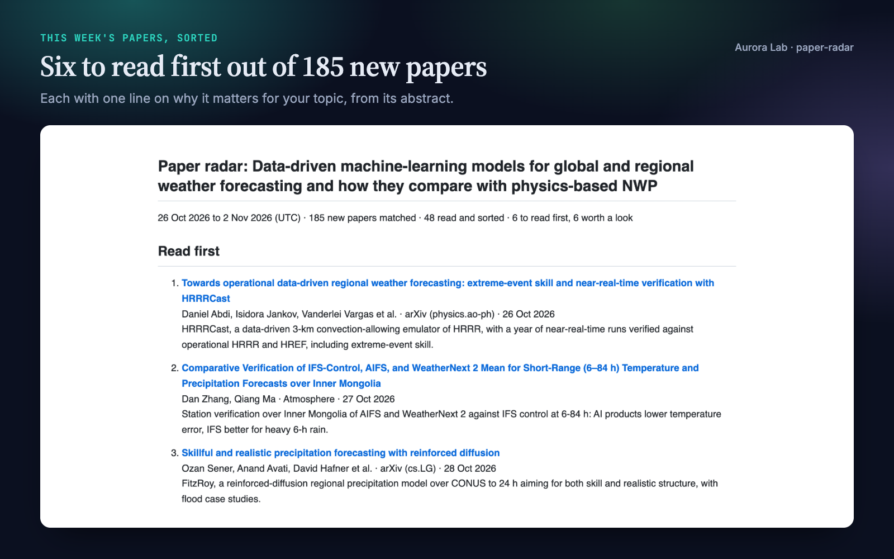
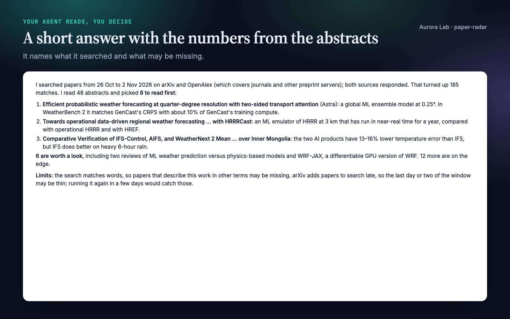
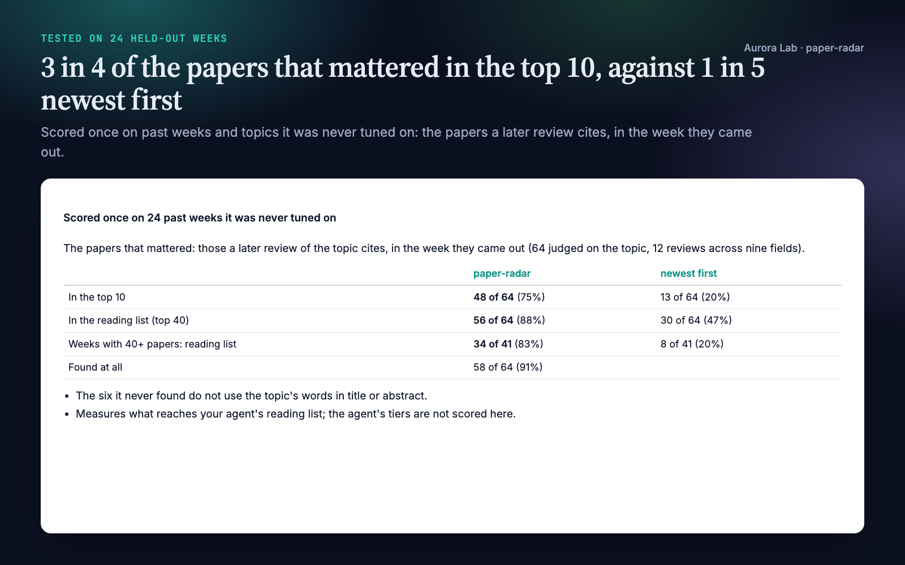
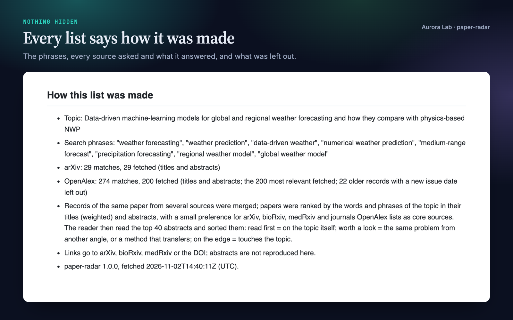
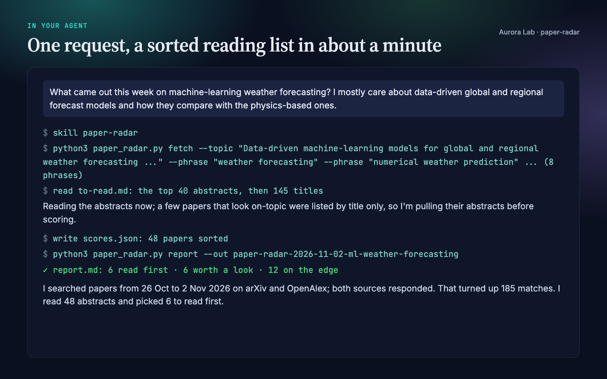

Overview
A single week brings hundreds of new papers, and keyword alerts list them newest first, so the ones that matter sit between dozens that only share a word. paper-radar searches the open scholarly sources for what came out in a date window, ranks it by fit to your topic, and has your agent read the abstracts and sort them.
- Four sources in one search. arXiv, bioRxiv and medRxiv for preprints, and OpenAlex for journals, conference papers and most other preprint servers. The same paper found twice is merged into one entry.
- Only what is new. Papers first posted or published in the window: the last 7 days by default, or any window up to 62 days ("since my last check"). Revised versions of older preprints and older journal articles given a new issue date are left out.
- Ranked, then read. Papers are ranked by how well their titles and abstracts fit your topic; your agent reads the top 40 abstracts (and any title further down that looks on the topic) and sorts them into read first, worth a look and on the edge, with one line on why for each.
- Nothing invented. Titles, authors, venues, dates and links in the report come from the records. A script checks every paper your agent picks against what was fetched and refuses anything else.
- Honest about empty weeks. When nothing is squarely on your topic, it says so instead of padding the list.
Quick start
- Get the skill from Agensi (free) and add it to your agent (Claude Code, Codex CLI, Cursor, Gemini CLI or any agent that loads SKILL.md skills).
- Nothing to install. The search is one Python script that uses only the standard library (Python 3.10 or newer). It needs internet access to the sources listed below.
- Ask in plain words, naming your topic as specifically as you can.
Example requests:
- "What came out this week on machine-learning weather forecasting?"
- "Any new papers on prime editing in the last two weeks? Check bioRxiv too."
- "I was away for the conference. Catch me up on long COVID since 1 May."
- "Find this week's papers on soil microplastics for Friday's journal club."
Want to see a report first? The skill ships the report and the tiers from a real run: examples/report.md and examples/scores.json.
What you get
These come from a real run: a fresh agent session with only this skill installed, asked the question in the last image on 2 November 2026. It searched the week of 26 October to 2 November, found 185 new papers, read 48 abstracts and picked six to read first, in 61 seconds. The report images come from the file it saved; the second image is from the agent's answer.





How well it works
We scored paper-radar once on 24 past weeks it was never developed on. A published review of each topic tells us which papers mattered: the ones it later cites that came out that week. An independent builder, who never ran the tool, chose 12 reviews from 2024 and 2025 on 12 topics in nine fields (3D Gaussian splatting, LLM hallucination, speech deepfake detection, lactylation, extrachromosomal DNA in cancer, CAR-T for autoimmune disease, anti-amyloid antibodies, altermagnetism, sodium-ion cathodes, flash drought, airborne eDNA and speech brain-computer interfaces), wrote each search from the review's title and abstract the way the skill tells an agent to, and judged which cited papers are on the topic: 64 of 86, since reviews also cite background from other topics. We then ran the search for the review's two busiest weeks and looked up where each cited paper landed.
| Measure, on-topic cited papers | paper-radar | Newest first (a keyword alert) |
|---|---|---|
| In the top 10 | 48 of 64 (75.0%, 95% interval 63.2–84.0%) | 13 of 64 (20.3%, 12.3–31.7%) |
| In the reading list (top 40) | 56 of 64 (87.5%, 77.2–93.5%) | 30 of 64 (46.9%, 35.2–58.9%) |
| In the reading list, in the 17 weeks with more than 40 papers | 34 of 41 (82.9%, 68.7–91.5%) | 8 of 41 (19.5%, 10.2–34.0%) |
| Found at all | 58 of 64 (90.6%, 81.0–95.6%) |
- Counting every cited paper, off-topic background included, 59 of 86 (68.6%, 58.2–77.4%) reached the reading list.
- The six on-topic papers it never found do not use the topic's words in their title or abstract ("Binary Opacity Grids" for Gaussian splatting, "Detection of human DNA in the air" for airborne eDNA).
- This measures the ranking: what reaches your agent's reading list. Your agent's tiers are not scored here.
- In 7 of the 24 weeks fewer than 40 papers matched, so the whole week fit in the reading list in any order; that is why newest-first order does better on the reading-list line. The top 10 and the busy weeks show what the ranking adds.
- During the run OpenAlex timed out once (one week of the CAR-T review, whose cited papers that week were all judged off the topic), as can happen to you; OpenAlex was searched with a free key. Labels come from reviews, so they lean towards papers that later became well known. The run was made once, on 2 November 2026, and nothing was changed afterwards. Ranking weights were tuned on 12 other weeks from six other reviews.
How it works
- Your request becomes a search. Your agent writes the topic as one sentence and three to eight phrases a relevant paper would use: the topic's names and abbreviations, its main methods, and one or two broader terms. For the life sciences and medicine it also picks bioRxiv and medRxiv categories.
- The search. arXiv (title and abstract), OpenAlex (title and abstract) and, when named, bioRxiv and medRxiv categories are asked for papers in the window that contain every word of at least one phrase.
- Merging and filtering. Records of the same paper (by DOI, arXiv id or title) become one; revised versions of older preprints and articles OpenAlex has known for more than a month before the window are dropped.
- Ranking. Papers are ranked by the words of the phrases and the topic in their titles (weighted) and abstracts, with a bonus for each exact phrase and a small one for arXiv, bioRxiv, medRxiv and journals OpenAlex lists as core sources. A record without an abstract is ranked on its title.
- Your agent reads. It reads the top 40 abstracts, skims the rest by title, and gives each paper it reads a tier and a reason grounded in the abstract.
- The report. A script checks the tiers against the fetched papers and writes
report.md: read first and worth a look with reasons, on the edge, the next 50 papers by title, and how the list was made.
The tiers
| Tier | Meaning |
|---|---|
| Read first | Squarely on the topic: you would be sorry to miss it. |
| Worth a look | The same problem from another angle; a method, dataset or result that transfers; a substantial review. |
| On the edge | Touches the topic: an application in another field, or the topic as a side issue. |
| Off the topic | Shares words only; listed with everything else found. |
Files it reads and writes
One folder per run: research/radar/<date>-<topic>/ when your project has a research/ folder, otherwise paper-radar-<date>-<topic>/ in the working folder.
| File | What it holds |
|---|---|
report.md |
The sorted list with reasons, the next 50 papers by title, and how the list was made. |
to-read.md |
The reading list your agent worked from: the top 40 with abstracts, then the rest by title. |
candidates.json |
Every paper found, ranked, with its record, and the search settings (reuse them next week). |
scores.json |
Your agent's tier and reason for each paper it read. |
It reads none of your files and writes nothing outside that folder.
Network and privacy
The script sends your search phrases, the categories and the dates, nothing else, to:
| Service | Used for |
|---|---|
export.arxiv.org |
arXiv's search, one request every three seconds as arXiv asks |
api.openalex.org |
OpenAlex's search of journals, conference papers and other preprint servers. Without a key it shares a small free daily budget with your network; a free key (OPENALEX_API_KEY) gives you your own. |
api.biorxiv.org |
bioRxiv and medRxiv postings by date and category, only when you name categories |
A source that cannot be reached is named in the output and the report, and the others still count. Set PAPER_RADAR_MAILTO to your email if you want OpenAlex to know who is asking; nothing is sent otherwise.
FAQ
Which agents does it work with?
Any agent that loads SKILL.md skills and can run Python, including Claude Code, Codex CLI, Cursor and Gemini CLI.
How is this different from an arXiv or journal alert?
Alerts list everything that matches a keyword, newest first, from one source. paper-radar searches four sources at once, merges duplicates, ranks by fit to your topic, and has your agent read the abstracts and tell you which few to read first, with a reason for each. On 24 held-out weeks, 75% of the papers that later reviews cite were in paper-radar's top 10, against 20% newest first.
Can it miss papers?
Yes. The search matches words, so a paper that describes your topic in other terms can be missed or ranked low; broader phrases help, and your agent also skims the titles below the reading list. Very new arXiv papers can take a day or two to appear in arXiv's search, and each run reads arXiv's 600 and OpenAlex's 200 most relevant matches.
Does it judge whether a paper is good?
No. The tiers say how close a paper is to your topic, judged from its abstract. The venue is shown, but a preprint can be read first.
Can it run every week by itself?
It runs when you ask. Next week, ask again: the topic, phrases and categories are saved in candidates.json, so your agent can reuse them.
How long does it take?
The search itself usually takes 5 to 30 seconds (each bioRxiv or medRxiv category adds a few). In our demo the whole request, reading included, took 61 seconds.
Do I need the other Aurora Lab skills?
No. It pairs well with bib-check (every reference in a bibliography checked against the registries), but it works on its own and never calls another skill.
Limitations
- Word matching: a paper that describes the topic in other words can be missed or ranked low.
- The ranking puts papers in front of your agent; it does not judge quality. Tiers come from abstracts only.
- OpenAlex has no abstract for some publishers' papers; those are ranked and judged by their titles.
- Journal papers are dated by OpenAlex's publication date. An article online for more than a month before its issue date is left out as not new; one online for less can appear in the week of either date.
- arXiv's last day or two in a window can be thin; a later run catches them.
- Papers that exist only on a publisher's or conference's own site without a DOI, and sources outside arXiv, bioRxiv, medRxiv and OpenAlex, are not searched.
Changelog
1.0.0 · November 2026 · First release.